大橋重工（株）
ロケット開発
(current)
開発研究
開発機関
研究所
開発工場
その他お問い合わせ
最先端の技術
Search
<<<<<<< HEAD
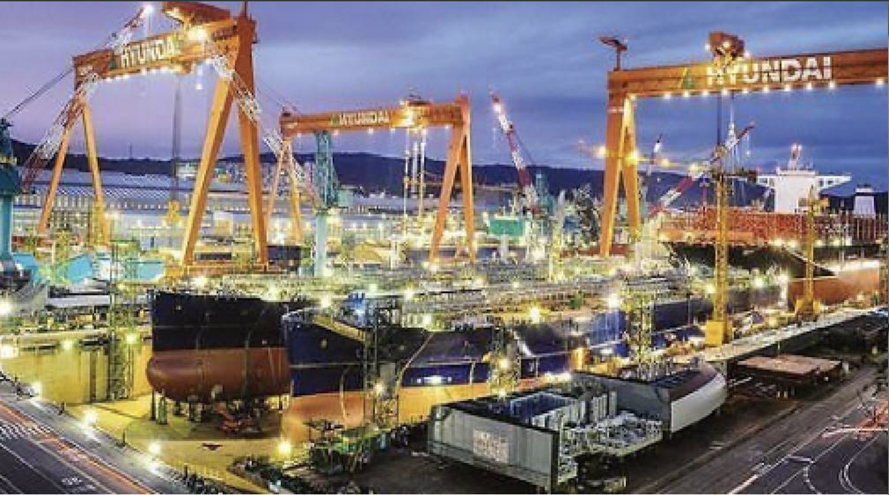 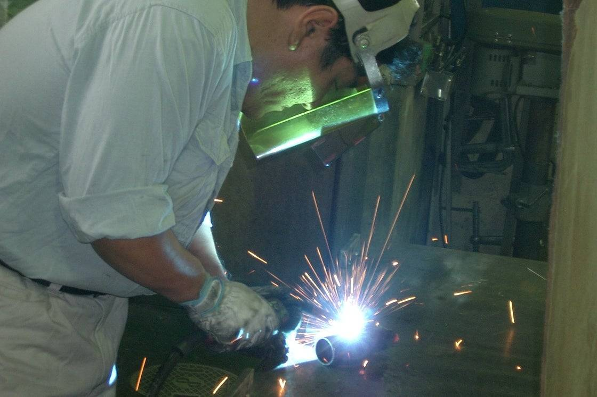
開発メンバー
======= 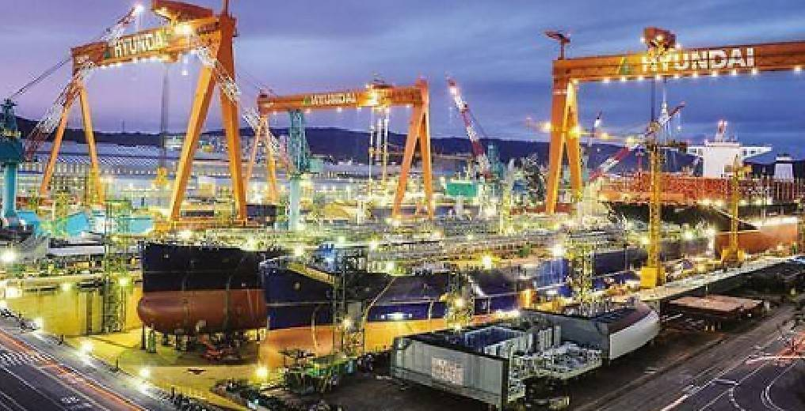
開発メンバー
>>>>>>> origin/master
<<<<<<< HEAD
======= 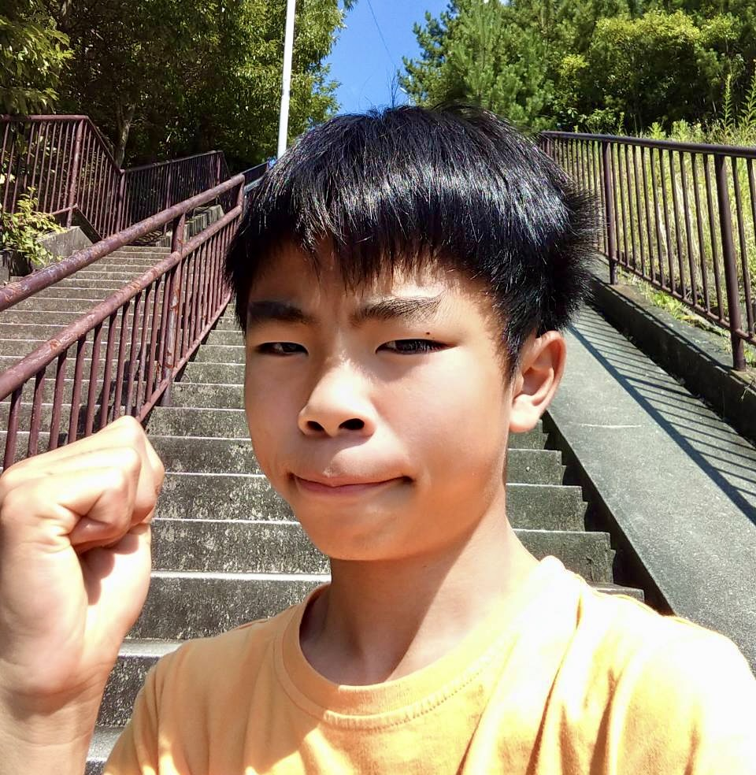
>>>>>>> origin/master
・大橋 蓮
・この大橋重工の社長
・好物 きゅうり
・趣味 鉄道
・決まり文句 なんでもできる！
・目標 世界ーの水ロケットを製造する事
・年収 ？
<<<<<<< HEAD 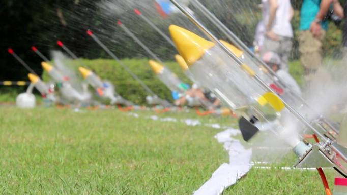
大橋重工の水ロケット
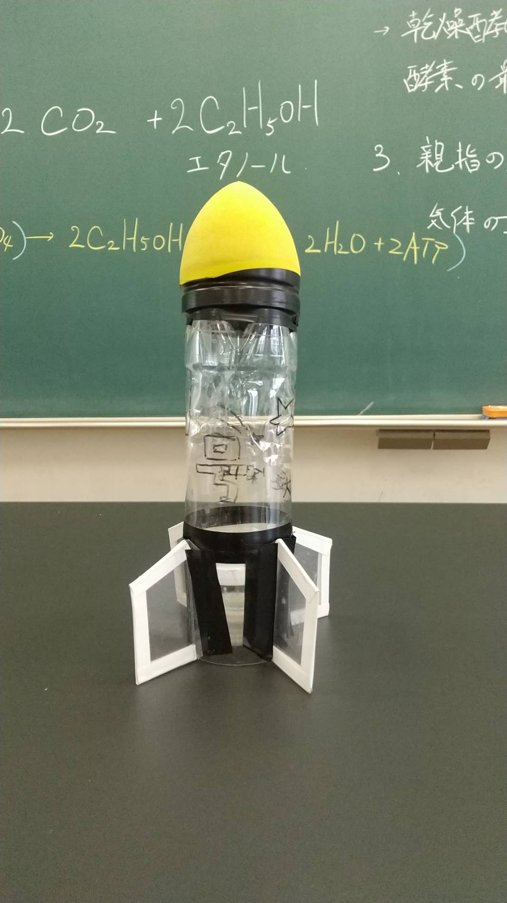
名称 流星 1号
製造 2020、7月
素材 ペットボトル
最高記録 48m
分類 500ml水ロケット
名称 流星 2号
製造 2020、11月
素材 ペットボトル
最高記録 36m
分類 1.2L水ロケット
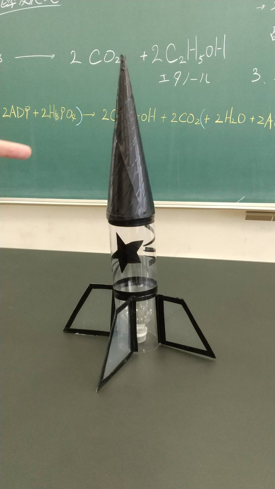
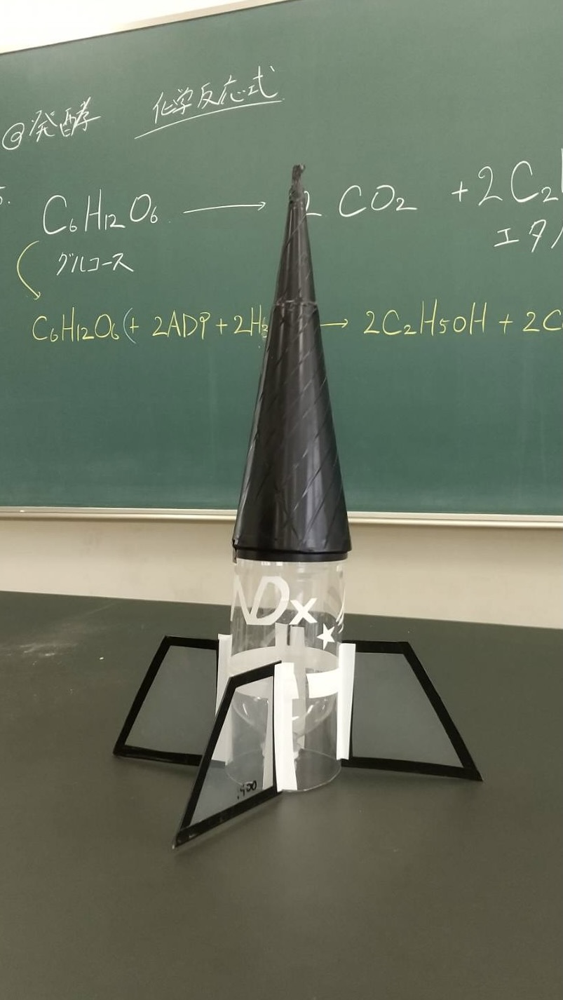
名称 NDx
製造 2020、1月
素材 ペットボトル
最高記録 49m
分類 1L水ロケット
名称 流星 3号
製造 2021、5月
素材 ペットボトル
最高記録 50m
分類 1.5L水ロケット
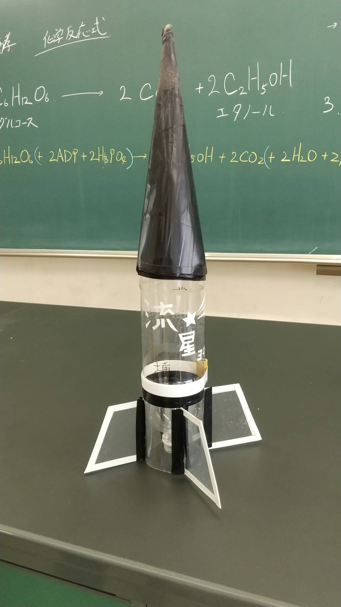
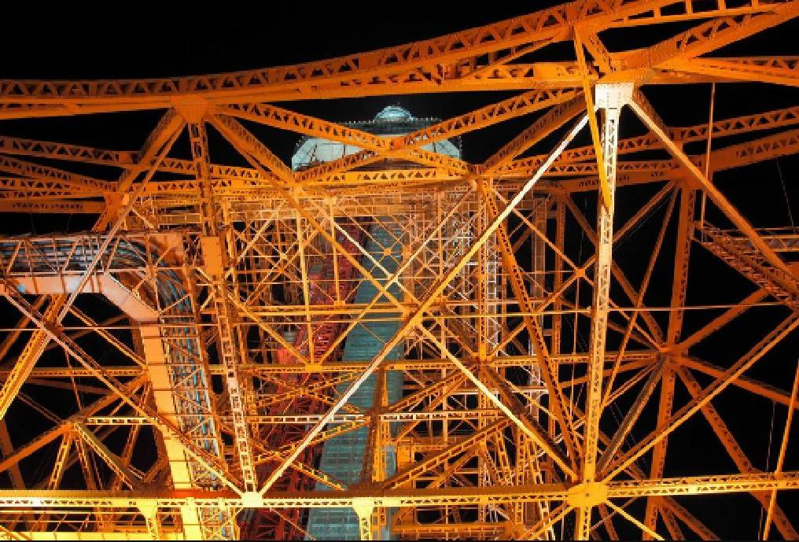
大橋重工ロゴ
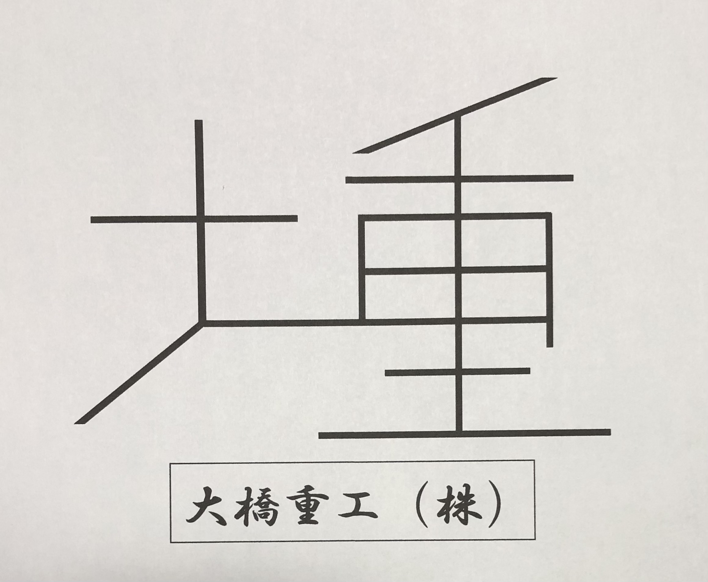
大橋重工の大重を取って作ったロゴマーク
左が大 右が重 です。
建築などにしようする鉄鋼をモチーフにしたロゴマークです。
関連YouTube
大橋重工の幻のロケット
今までに、沢山の水ロケットを生産してきた大橋重工ですが、時にはとある事情で幻になってしまった水ロケットが存在します。それは、一体
どのようなものなのでしょうか?
ノリ太朗
名称 ノリ太朗
製造 2020、９月
素材 洗濯ノリの空ボトル
最高記録 0m
幻の理由 ノズル部分の溶接の隙間から水と空気が漏れた為製作中止
現在は廃車
連結ロケット
名称 不明
製造 不明
素材 ペットボトル
最高記録 0m
幻の理由 連結部分の溶接の隙間から水と空気が漏れた為製作中止
現在は廃車
IFI
名称 IFI
製造 不明
素材 ペットボトル
最高記録 1m
幻の理由 連結部分の溶接の隙間から水と空気が漏れた為製作中止
現在は廃車
分ちゃん
名称 分ちゃん
製造 不明
素材 ペットボトル
最高記録 上空10m
幻の理由 全然上に飛ばず、パラシュートが開かなかった為廃車
現在は廃車
======= >>>>>>> origin/master